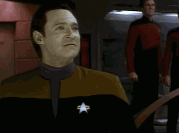

the data layer!

technically all layers are data layers
but bear with me here
types of objects in geodata:
lines
points
polygons
geodata formats
non-web:
- GPX (GPS Exchange Format)
- NMEA (National Marine Electronics Association spec)
- ESRI Shapefiles (.zip or .shp)
- EXIF (Exchangeable Image File Format)
web-readable:
- KML (Keyhole Markup Language)
- GeoJSON
- TopoJSON
but also like, a CSV even
also PostGIS
this is where I should tell you more about
cartodb
converting non-web to web
online services
desktop/command line tools
- ogr2ogr (part of GDAL)
- GPSBabel
- togeojson, csvtogeojson...
example:
converting exif data to geojson
this isn't necessarily the best method tbh
this just happens to be a way I've done it
and I wanted to introduce you to some relevant tools
¯\_(ツ)_/¯
gpsbabel -i exif -f image.jpg -o gpx -F image.gpx
togeojson image.gpx > image.geojson
geojson-merge image-1.geojson image-2.geojson image-3.geojson > images.geojson
but whoa whoa whoa
before you convert data
where do you find it?
pulling data out of OpenStreetMap
Overpass API
joining geodata to other data
basically, table joins
okay
we have a base layer
we have some data layers